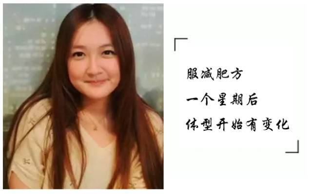
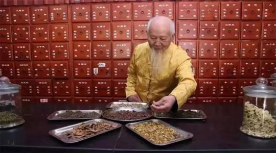

我是一名中医，半辈子抬头诊病、低头开方，行医50年，我凭得是真本事，靠得是铁疗效 ，从不弄虚作假、敷衍了事！不就是减肥这点事儿么？！有什么难的！你这么努力，你的办法瘦了么？到头来不还是个胖人？还是个满身是病的胖子！我说你能减下60斤，你就能瘦！ 前两个月，有一位女孩子叫芳芳，是一位平面模特，典型的产后发胖，体重达到150多斤，事业进入低谷。她几乎把包括西药、节食、运动等等能想到的减肥方法都试了一遍，但是结果非常糟糕，不但没瘦下来，体质反而变差了，甚至还住院了好多天！
前两个月，有一位女孩子叫芳芳，是一位平面模特，典型的产后发胖，体重达到150多斤，事业进入低谷。她几乎把包括西药、节食、运动等等能想到的减肥方法都试了一遍，但是结果非常糟糕，不但没瘦下来，体质反而变差了，甚至还住院了好多天！
出院后，好朋友推荐芳芳通过传统中医来调理身体并减肥，芳芳将信将疑的同意了，就这样来到我这里咨询并寻求帮助。 经过问诊后我给她开出了一个吸油汤的方子，因为她是感受过减肥过程中的各种痛苦，对这个减肥方法立即产生质疑：我的肥胖这么顽固，王老你既不打针、吃药，又不让我节食、运动，这么一盒小小的“吸油汤”，这么简单就能让我瘦身成功？还能保证瘦身不反弹？这不是天方夜谭吗？王老，您不是在骗我吧？
我听到这话拍案而起：我行医50余年，帮助过的肥胖人数少说也有数万人。我没有医托，都是父老乡亲口口相传，大家主动找我帮忙瘦身，我凭的是真本事，靠的是铁疗效！像你这种产后肥胖我治的多了，如果减不下40斤，你砸了我祖传的金子招牌！
芳芳见我说的这么有底气，就决心回家试试。她后来跟我聊天的时候说：她万万没想到的是刚用上3天，就排出了油腻腻的宿便，使用5天左右，就感觉腰围开始变小了，接下来的时间瘦的越来越快，使用不到两个月就瘦了40斤。 没想到小小的吸油汤竟有如此神效，看来是错怪王老。前几天芳芳还拿着谢礼来向我赔不是，并感谢我帮助她健康瘦身成功。
王老中医是谁？
王老中医：我是来自沂蒙山区的一位干了50年的中医，从太爷爷那辈开始我家就几辈从医，抛去所谓的“祖传”秘方咱不谈，单就本人在农村50年的临床治病经验而言，去年年底（2015年）的时候做出一个对于我来说可以说是一个重大决定，受我外孙女的影响，我决定公布我的秘方。整理了两个礼拜，这些经过本人长期验证的特效药方贡献给大家，今天主要给大家说的是讲减肥的。

瘦身有两个原则：
1、信得过我的有钱没钱都帮助你瘦身，信不过我的给我一座金山我也不帮你减肥；
2、不管你有多胖，只要坚持使用我的吸油汤，效果立竿见影，健康瘦身不反弹，坚决不让老百姓多花一分冤枉钱。
外孙女威信号：a88885668
（长按二维码添加老中医外孙女微信即可当场咨询)
长按二维码3秒即可加为好友
已经有9.8万人↓ ↓ ↓ 通过老中医成功瘦身。
吸油溶脂，中药中医，祖传一绝
在沂蒙山下，有一个老中医，因专门帮人减肥而出名，人称“减肥专业户”的奇人，有人说，此人的祖传秘方—“吸油汤”，可了不得，普通的肥胖三高，一周就能看到效果，不管你胖了多长时间，用了多少种方法，用足一个月，保证让你瘦下来，还可以治疗便秘、月经失调，让人面色红润精神好！有人说，他用来给人瘦身的方子是祖传的，曾有人花巨资买他的方子，他愣是没卖。
问：王老您做一下自我介绍吧，顺便讲讲您的“吸油汤”
王老：我从医50余年，祖上代代行医！我秉承祖上“瘦身方”。治别的病我不敢说，减肥瘦身，一百个人我能治好九十九个。据先辈们说这个方子当时是给宫廷里的妃子们配的，减肥非常有效，对年龄大、血脂高的人降压、减肚子也很管用。这个方子不单讲究材料配比，还结合了人体五行进行的配比 。
每个人的肥胖，都是有原因的，遗传只占了20%左右的因素，剩下的80%都是后天造成，无论是先天还是后天，只要不是病理性的（因为生病在服用一些药物引起的肥胖），都是可以瘦下来的，当然，要讲究方法 。
千年古方今用 治病求本
问：王老，您家祖传的这个吸油汤到底有何独到之处呢？
王老：我祖上代代行医，专业治疗肥胖疾病，精通药理研究，擅长以中草药入药，先调后理，别小看我这个方子只有六味药，这可是从唐朝那会，老祖宗一代一代传下来的，这个方子当时是给宫廷里的妃子们配的，减肥非常有效，对年龄大、血脂高的人降压、减肚子也很管用。
这个配方是以泄为主，中医说的“泄”不是指拉肚子，是泄油，泄毒，行经通络，只要不是病理性的肥胖，都会有效。有的人当天就能瘦，有的人一周就减3-8斤，有的人一个月瘦20多斤，只要喝我的这个方子，方法对，药材对，那就一定能瘦。
配方图：

配方部分详细说明：
❖【荷叶】：清暑化湿，升发清阳，去肝火，排脾之湿毒，通肝、脾，利运化
❖【决明子】：这种决明子清热明目，润肠通便，清肝之毒素，使之通畅，助体内气机升降通达。
❖【泽泻】：长白山黑土地非常肥沃，长出来的泽泻块头均匀，质地紧密，主要作用是清水肿，治五劳七伤，去脬中留垢。
❖【柠檬粉】：主要功能是清理肠道毒素，平时切片泡水喝也可以排毒，对皮肤也有很好的美白作用。
❖【绞股蓝】：能把厚厚的脂肪像冰山一样融掉，想想就可怕。
❖【乌龙茶】：采用生长一年以上的台湾冻顶乌龙，这种乌龙茶不但能吸油，通俗点的说法就是把厚肉变成薄肉，还能够降血压。
❖ 前些年有些姑娘们从老远的地方坐飞机坐火车来我这里，为的就是这个方子，我都建议她们不用花这么高交通费，药材没多少钱，来回跑的钱是药材的几十倍。 外孙女威信号：a88885668
（长按二维码添加老中医外孙女微信即可当场咨询）
长按二维码3秒即可加为好友
已经有9.8万人↓ ↓ ↓ 通过老中医成功瘦身。
问：王老，近几年市场上很多减肥产品各个吹的神乎其神，但患者用后效果却一般，还反弹，那吸油汤如何让百姓放心呢？
王老：没错，无德之人行医必害人。最近几年，黑心药商盲目夸大疗效，致患者利益于不顾，我很痛心，他们应当遭到全社会的谴责和法律的严惩。
人做事，天在看，我的方法和别人不一样，我不要肥胖患者吃药、打针，我将荷叶,泽泻,柠檬粉,绞股蓝,乌龙茶等六味中药材按照合理配比，磨粉调和，放在了四角茶包里，每天吃饭冲泡一包直接饮用即可，非常方便。在减肥瘦身的同时不会伤害到身体，能促进新陈代谢调节生理机能，有效改善肥胖体质。 纯天然的中药成分减肥，效果自然不同凡响！
我认为做人要厚道，做医生更要厚道，诚实守信，不坑人害人，不能夸大宣传，要实事求是。
问：您这么多年一定帮助过很多类型的肥胖患者，能不能给我们举几个例子呢？
王老：嗯。这让你问着了，这样的例子就是讲上十天十夜也讲不完啊，我就说说最近的三位吧。
张萌：（30岁，饮食肥胖）典型的吃货，管不住嘴，她自己都说不让她吃，还不如死了呢。使用吸油汤两个月，吃喝照旧，但是体重从原来的135斤成功降至97斤，气质提升了，肤色也变好了。
李建：（27岁，啤酒肚）业务经理，每天应酬到很晚，喝酒自然少不了，吃饭睡觉都不规律，更没时间健身了，时间久了，将军肚出来了，使用吸油汤2个月，将军肚彻底消失，再多的应酬也不怕了。
 王晶晶：（25岁，先天肥胖）先天的胖妹子，从小到都胖乎乎的，同学笑她大脸妹，为此试了很多种减肥方法，都无疾而终，使用吸油汤两个月，体重由原来的142斤成功降至95斤，再也不是别人口中的大脸妹了.
王晶晶：（25岁，先天肥胖）先天的胖妹子，从小到都胖乎乎的，同学笑她大脸妹，为此试了很多种减肥方法，都无疾而终，使用吸油汤两个月，体重由原来的142斤成功降至95斤，再也不是别人口中的大脸妹了.

问：王老，您今年快80岁了，可依然坚持坐诊6个小时，可就是这样还是有很多患者没办法当天看病，有没有更好的办法呢？
王老：是啊，很多患者都说找我看病不容易，如今我将近八旬，也常常觉得力不从心，日前，已经委托诚信企业把这个方子制成成品，深受肥胖困扰的患者。
现在全国各地的肥胖患者再也不用舟车劳顿了，在家门口就能治好病了，这个成药是我在祖传老方的基础之上，又增加了一些独门猛药研究出来的，功效更强大，我敢保证，效果跟我亲手医治不差毫厘。
我的“吸油汤”非常适合以下人群：
（一）产后肥胖，哺乳期都可以用（这款有利于排出产后恶露，调节气血，不会影响到母乳。当然也不能说，对孩子也有什么好处，但是绝对没有坏处）。
（二）青春期过后肥胖，久坐缺乏运动，气虚体质。血虚体质，以及阳虚阴虚体质都可以使用。
（三）食欲特别大或者没有胃口，以及气虚的体质 ，感觉自己口臭或者便秘但是手脚还冰凉的一般是由胃火引起的便秘。
（四）肝气郁结的虚假表现，适用这个。
（五）本身湿气重的体质，也就是比较容易乏力的女士，容易浮肿的体质。
（六）寒性体质：容易手脚凉，宫寒来月经容易肚脐疼的人。血块多、经期颜色比较暗红发褐色的女性都可以用。
（七）男性啤酒肚、将军肚也可以使用。
后记：
有人说老师是“瘦身奇迹”，老师却说自己就是一名普普通通的医生，凭本事为胖友们瘦身，我们想通过这位民间中医，将中医国粹发扬光大，让丁老的医术造福更多的肥胖患者，让全国肥胖人群不再走冤枉路，不再浪费血汗钱，踏踏实实地用祝老的丁吸油汤减肥瘦身，外表美丽，身体健康才是你应该过的生活。
王老郑重提醒使用者：
吸油汤每天饭后服用一袋，不能间断，这样才能持续足够的功效，健康瘦身不反弹。
外孙女威信号：a88885668
（长按二维码添加老中医外孙女微信即可）
长按二维码3秒即可加为好友
已经有9.8万人↓ ↓ ↓ 通过丁老成功瘦身。
愿健康长伴 望美丽相随
阅读 100000+
精选留言
bonnie158
我也是之前成功瘦下来的微信朋友介绍的，加了王老师的微信号，很专业一对一的分析和指导下，我主要是大肚子，其他都还好，现在我的肚子赘肉明显瘦下去了，不再突出来，穿衣服好看而且皮肤也变好了！希望能帮到你哦，减肥必须要坚持才能成功哦!
作者回复
O(∩_∩)O减肥是要坚持哦~
小火星大太阳 198
我也是服用这款纯中药产品瘦下来的，当初选择的原因就是没有副作用
丽琼 118
半个月瘦了13斤，腹部和腰围都减了4公分。对王老师，我很有信心！期待后续效果！
作者回复
O(∩_∩)O谢谢
王大锤 138
感谢楼主分享，减肥这事困扰好多年了，先去了解一下，闪人了~~
不忘初心_谢 115
我以前是比较瘦的，在高中时候吃的特别多而且是一直不停的吃，才导致的肥胖。不过令人欣慰的是听了王老师的指导，最后我现在又成功瘦下来了。
作者回复
O(∩_∩)O哈哈~
Margaret 156
我是典型的吃货，之前也试过不少的减肥方法，后来听朋友介绍王老师，让我真正瘦了一圈，没节食没运动，照样瘦了30斤！！！对我来说非常满意。
If158
如果管用，楼主我给你包个红包
作者回复
这必须滴，写这篇博文要累死楼主了
阿飞的小蝴蝶 133
读完还是挺有收获的，我也 试试
我是皮皮啦 129
我也是产后一直没瘦下来，三餐都不定时，体重不停的在上升。也是通过朋友介绍找到王老师帮我瘦身成功的！现在美美哒
作者回复
你本来就很美
Monica139
减肥7年多，用过无数产品绝望中遇见了你，感恩！
阿城先生 128
为啥我加上还没通过。。。。
作者回复
王老师太忙了吧，再等等就通过了
打人不打脸 152
我之前一直服用西药，还有副作用，一直在找纯中药的产品 太好了
啊信心13
楼主，咱俩情况很像啊，看来我是也能变得美美的呗
有会子 123
试过好多方法了，都不管用，纠结，听说这个方子还不错，
算了先加上试试吧
作者回复
别灰心了，王老师一定能帮到你的
One man 197
加了，前段时间我还听朋友介绍过，没怎么在意
姑娘不倾城 202
早有耳闻，已默默的加上